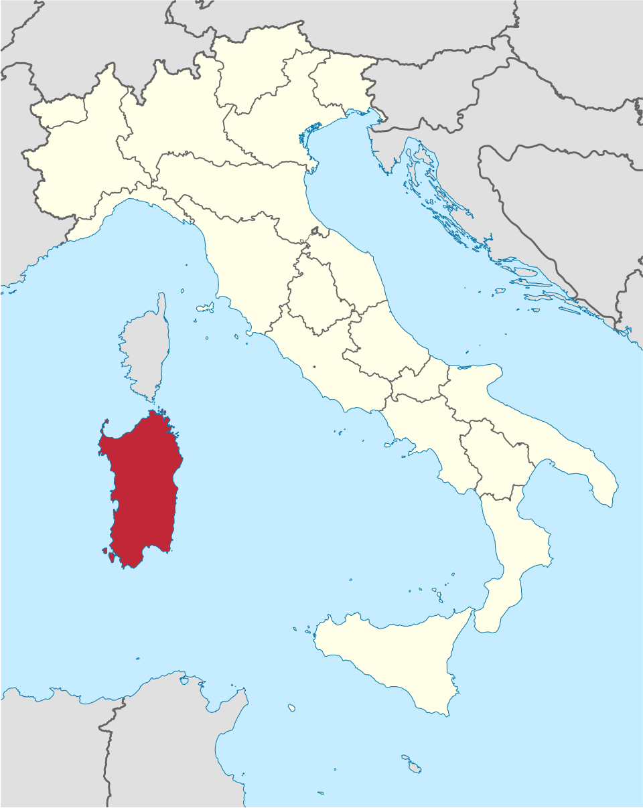
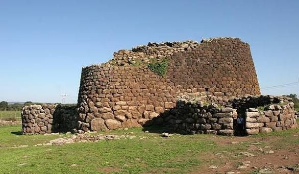
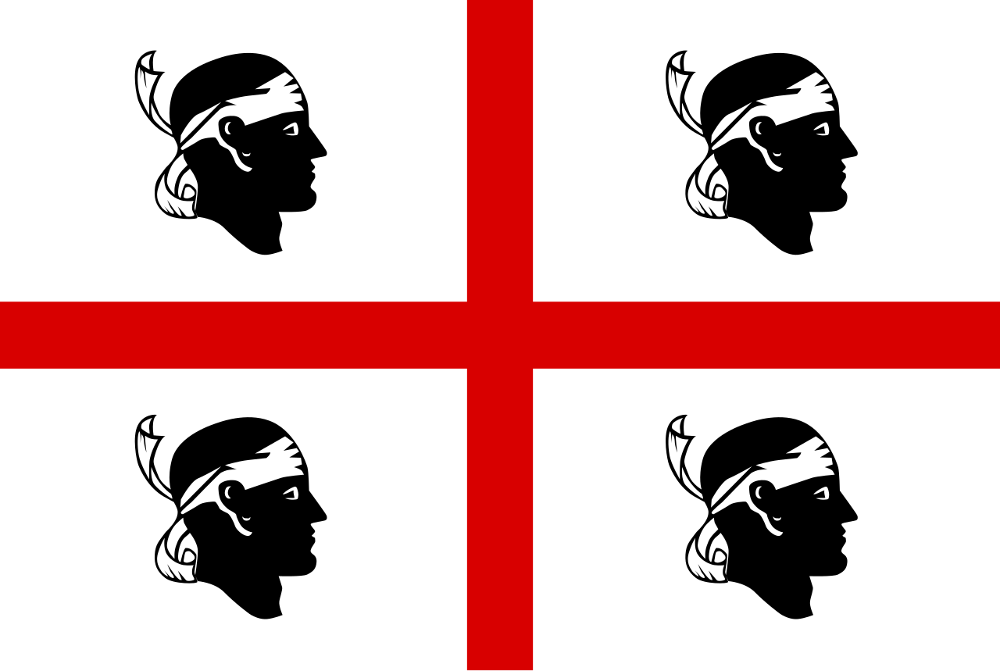
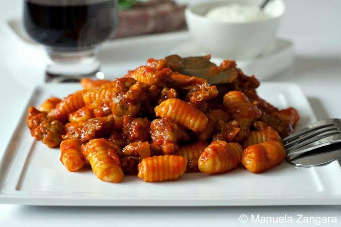
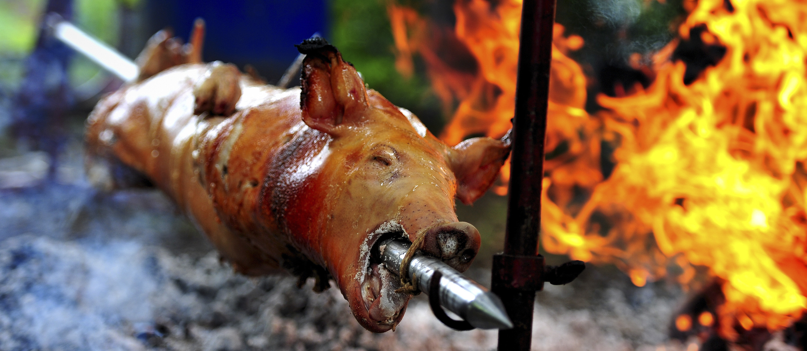
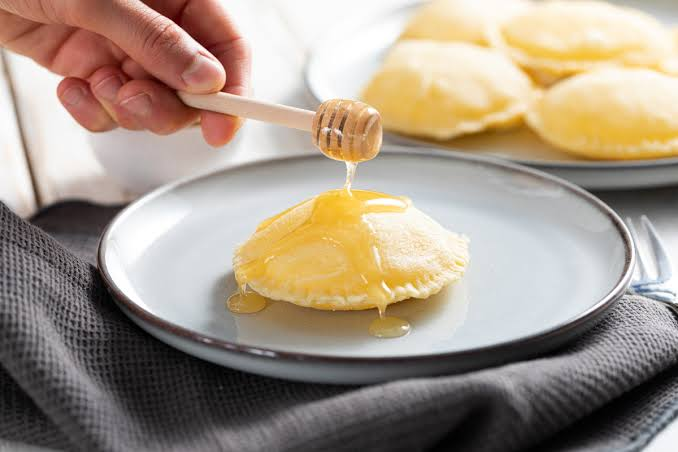
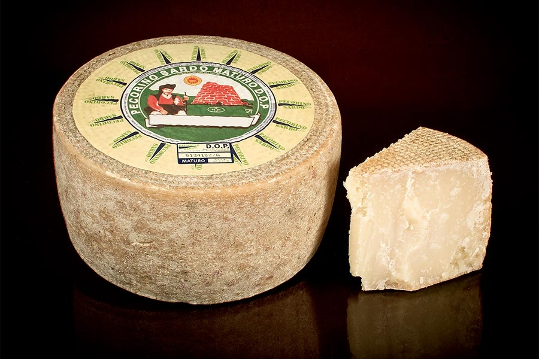

Malloreddus alla Campidanese, Porceddu, Seadas, and Pecorino Sardo
⭐ Known For
Nuragic civilization, Costa Smeralda, and unique traditions
Geography

Location of Sardinia within a map
Sardinia is the second-largest island in the Mediterranean Sea, located west of the Italian Peninsula and
south of the French island of Corsica. Surrounded by the Tyrrhenian Sea, the Sea of Sardinia, and the
Mediterranean Sea, the island is known for its rugged landscapes, crystal-clear waters, and unique natural
environments. Much of Sardinia’s interior is mountainous and hilly, with areas such as the Gennargentu
massif forming the island’s highest peaks. Alongside its mountains, Sardinia features vast forests, rocky
plateaus, fertile plains, and some of the most famous beaches and coastal landscapes in Italy. Its isolation
has helped preserve a distinct culture, traditions, and natural heritage that make the island unlike any
other region of Italy.
The region is divided into 4 provinces and 1 metropolitan city: the Metropolitan City of
Cagliari and the provinces of Sassari, Nuoro, Oristano, and Sud Sardegna.
Capital (and largest city): Cagliari
Climate
Sardinia has a typical Mediterranean climate. Along the coastal areas, winters are mild while summers are
hot and humid, but with strong sea breeze which alleviate the heat of summer. In the inland flat and hilly
areas there are lower winter and higher summer temperatures. The climate is on the whole quite mild, but
winter temperatures can sometimes drop below freezing, whereas and summer highs can reach 40°C (104°F). On
the mountains there are winter snows, while in the summer season the climate remains cool and is rarely hot.
Topography
Sardinia’s landscape is characterized by a rugged and diverse terrain, with hills covering much of the
island and mountains rising in the interior. Its highest peak is Punta La Marmora (1,834 m), located in the
Gennargentu mountain range, a protected natural area known for its dramatic scenery. The island also
features underground rivers, caves, mineral springs, and the fertile Campidano Plain, the largest flat area
in Sardinia. Beyond its natural landscapes, Sardinia is famous for its unique prehistoric heritage,
including thousands of mysterious nuraghi—ancient stone towers built by the Nuragic civilization that still
dot the island today.
Origins

Nuraghi
Located at the heart of the Mediterranean Sea, Sardinia has been a crossroads for civilizations for
thousands of years. Its strategic position made the island an important meeting point for different
cultures, leaving behind a rich archaeological and historical legacy.
One of the most important chapters in Sardinia’s history was the Nuragic civilization, which developed
during the Bronze Age and lasted for centuries. This ancient civilization left behind around 8,000 nuraghi,
unique stone structures with a truncated cone shape that can still be found across the island. The most
famous example is Su Nuraxi di Barumini, a UNESCO World Heritage Site. Other remains from this period
include the Tombs of the Giants, prehistoric burial monuments; the domus de janas, rock-cut tombs; and the
mysterious Sardinian menhirs. The Nuragic people were skilled warriors, navigators, farmers, and shepherds
who traded with other Mediterranean civilizations, including those as far away as North Africa.
During the Giudicati period (beginning in the 9th century), Sardinia was divided into four independent
kingdoms known as the Giudicati. During this era, the island successfully resisted an attempted Muslim
conquest led by Mujāhid al-ʿĀmirī, with Sardinian forces defending the island alongside naval support from
the maritime republics of Pisa and Genoa.
Later, Sardinia became part of the Kingdom of Sardinia, established in the 14th century during conflicts
between the Crown of Aragon and the Duchy of Anjou. Over the following centuries, the island came under the
rule of Spain, Austria, and eventually the House of Savoy. In 1847, Sardinia was united with the Savoy
state, and fourteen years later, in 1861, the Kingdom of Italy was created from the Kingdom of Sardinia,
marking the beginning of modern Italy.
Want to learn more about the Nuragic Civilization? Watch this video.
As of 2026, the population of Sardinia is over 1.5 million people.
In addition, the region has a land area of 24,109 km² and a population density of 64.48/km².
Major Cities (as of 2026)
1. Cagliari
Located on Sardinia’s southern coast, Cagliari is the island’s capital and largest city. Known for
its colorful waterfront, historic Castello district, and beautiful beaches, it has been an important
Mediterranean port for over 2,000 years. Visitors can explore landmarks such as the Cathedral of
Santa Maria, the Roman Amphitheatre, and the nearby Poetto Beach.
Population: 145,981 people
2. Sassari
Sassari is the second-largest city in Sardinia and one of the island’s most important cultural
centers. Founded in the Middle Ages, it is known for its elegant historic center, lively piazzas,
and Baroque architecture. Every year, the city hosts the Faradda di li Candareri (Descent of the
Candelieri), a UNESCO-recognized cultural festival dating back to the 16th century.
Population: 120,231 people
3. Quartu Sant'Elena
Located just east of Cagliari, Quartu Sant'Elena is one of Sardinia’s largest cities and a gateway
to some of the island’s most beautiful beaches. The city combines modern urban life with traditional
Sardinian culture and cuisine. Its long coastline and proximity to the Molentargius Regional Park,
famous for its pink flamingos, make it a popular destination for nature lovers.
Population: 67,869 people
4. Olbia
Situated on Sardinia’s northeastern coast, Olbia is one of the island’s main ports and an important
gateway to the famous Costa Smeralda (Emerald Coast). The city has a history dating back to ancient
times and features archaeological sites, Roman remains, and the medieval Basilica of San Simplicio.
Today, Olbia is known for its beautiful beaches, crystal-clear waters, and vibrant tourism industry.
Su Nuraxi di Barumini is Sardinia’s most famous archaeological site and a UNESCO World Heritage
Site. Built by the ancient Nuragic civilization around the 16th century BCE, it is the
best-preserved example of a nuraghe—a massive stone tower unique to Sardinia. The site offers a
fascinating glimpse into one of the Mediterranean’s oldest civilizations.
The Costa Smeralda is one of the most famous coastlines in the Mediterranean, renowned for its
turquoise waters, white-sand beaches, and luxury resorts. Located in northeastern Sardinia, it
attracts visitors from around the world with destinations such as Porto Cervo, picturesque coves,
and excellent opportunities for sailing, snorkeling, and swimming. It has become an international
symbol of Sardinia’s natural beauty.
Flag

The flag of Sardinia features the Cross of Saint George with four Moor’s heads placed in each quadrant. The
four figures traditionally represent defeated Moorish princes and are believed to be connected to the
medieval victories of the Crown of Aragon. Although earlier versions of the symbol may have shown the
figures with their eyes covered and facing the hoist side, historical depictions from the 16th century
onward clearly show the familiar design of the heads wearing a forehead bandage and facing outward. The
symbol first appeared in Sardinian contexts during the Middle Ages and has since become one of the island’s
most recognizable emblems.
Adoption
The origins of the Sardinian flag date back to 1281, when the Cross of Saint George and the four Moors
symbol began being used. The modern version of the flag, with its current design and orientation, was
officially adopted on April 15th, 1999.
History
The origins of the Sardinian flag can be traced back to the Middle Ages. The earliest known heraldic symbol
featuring the Cross of Saint George with four Moors—known as the Cross of Alcoraz—dates to 1281, when it was
used by King Peter III of Aragon as part of his royal coat of arms. However, the early versions of the
symbol differed from the modern flag, as the Moors were shown bearded and without the famous forehead
bandages.
After the Kingdom of Sardinia became part of the Crown of Aragon in 1326, the symbol became increasingly
associated with the island. Over the following centuries, the Four Moors appeared in various royal seals,
manuscripts, and heraldic collections, eventually becoming a recognized emblem of Sardinia. The symbol was
officially documented as the island’s coat of arms in 1591, appearing on the cover of the records of the
Sardinian Parliament.
During the period of Spanish rule, the traditional design with the Moors wearing forehead bandages was
maintained. However, in the 19th century, after Sardinia became part of the House of Savoy, a new version
appeared showing the Moors blindfolded and facing the opposite direction. This design was later adopted as
the official regional flag in 1952. In 1999, Sardinia restored the earlier version, returning to the
traditional design that is used today.
Legendary Origins of the Flag
The origin of the Four Moors symbol is surrounded by legends, with both Spanish and Sardinian traditions
offering different explanations. According to the Spanish legend, the symbol dates back to the Battle of
Alcoraz in 1096, when Saint George is said to have miraculously appeared to help the forces of King Peter I
of Aragon defeat the Moors. The four Moorish heads on the flag were believed to represent the defeated
Saracen kings, combined with the red cross of Saint George.
A different tradition connects the symbol to the Pisan-Sardinian alliance during medieval conflicts against
Muslim forces attempting to conquer Sardinia. According to this version, a banner featuring the Cross of
Saint George was given by Pope Benedict VIII to support Pisa and Sardinia, although this early version did
not include the four Moorish heads.
During the Middle Ages, Sardinia was divided into four independent kingdoms known as the Giudicati:
Cagliari, Arborea, Gallura, and Torres. As the island was later united under the Kingdom of Sardinia, the
Four Moors gradually became a symbol representing the entire island and its people. While historians
continue to debate the exact meaning of the symbol, it remains strongly connected to Sardinia’s medieval
history and the complex interactions between Christian and Muslim powers in the Mediterranean.
Today, the Four Moors represent Sardinia’s identity, heritage, and long history of cultural encounters.
Whether interpreted as symbols of medieval victories or as representations of Christian traditions, the
emblem has become one of the most recognizable symbols of the island.
Languages
Although Standard Italian is the official language of Sardinia, the island is also home to Sardinian
(Sardu), one of the oldest and most distinctive Romance languages in Europe. Unlike many Italian regional
dialects, Sardinian is considered a separate language, having evolved directly from Latin while preserving
many ancient linguistic features. Several regional varieties exist across the island, including Logudorese
and Campidanese, along with smaller minority languages such as Catalan in Alghero, Tabarchino in Carloforte
and Calasetta, and Gallurese and Sassarese in northern Sardinia. Together, these languages reflect the
island’s rich history and the many civilizations that have influenced Sardinia over the centuries.
Food
Sardinian cuisine reflects the island’s pastoral traditions, Mediterranean environment, and ancient cultural
influences. Known for its simple yet flavorful ingredients, Sardinian food often features fresh seafood,
locally produced cheeses, handmade pasta, grains, and roasted meats. Many traditional dishes come from the
island’s rural communities, where shepherds and farmers developed hearty recipes using ingredients available
from the land and sea.
Primo (First Course)

Malloreddus alla Campidanese
Malloreddus alla Campidanese is one of Sardinia’s most famous pasta dishes. These small, ridged
pasta shells are traditionally served with a rich sauce made from tomatoes, Sardinian sausage,
saffron, and pecorino cheese. Often considered the island’s signature pasta, it represents
Sardinia’s agricultural traditions and love for simple, local ingredients.
Secondo (Second Course)

Porceddu
Porceddu is a traditional Sardinian dish consisting of a whole roasted suckling pig, slowly cooked
over a wood fire and seasoned with herbs such as myrtle and rosemary. Often prepared for festivals
and special occasions, this dish reflects the island’s long-standing pastoral culture and the
importance of livestock farming in Sardinian traditions.
Dolce (Dessert)

Seadas
Seadas (also called Sebadas) is a traditional Sardinian dessert made from fried pastry filled with
pecorino cheese and topped with honey. The combination of salty cheese and sweet honey creates a
unique flavor that reflects Sardinia’s agricultural heritage. Originally associated with shepherd
communities, Seadas remains one of the island’s most beloved desserts.
Regional Spotlight

Pecorino Sardo
Sardinia is world-renowned for its Pecorino Sardo, a traditional cheese made from sheep’s milk that
has been produced on the island for centuries. Created using methods passed down through
generations, this cheese can range from soft and mild to firm and intensely flavored depending on
its aging process. Pecorino Sardo reflects Sardinia’s deep shepherding traditions, as sheep farming
has played an important role in the island’s rural culture and economy for thousands of years.
Today, it is one of Italy’s most celebrated cheeses and a symbol of Sardinian culinary heritage.
Art and Music
Art
The Murals of Orgosolo
Sardinia's Mural Art (Murals of Orgosolo)
Sardinia is famous for its vibrant mural art, which can be found throughout many towns and villages across
the island. These large-scale paintings often depict scenes of Sardinian history, traditions, daily life,
and social issues, transforming ordinary streets into open-air galleries. The town of Orgosolo is
particularly well known for its murals, featuring hundreds of artworks that tell stories about local
culture, politics, and important moments in Sardinian history. Today, Sardinian murals are considered a
powerful expression of the island’s identity and connection to its people.
Tazenda is one of Sardinia’s most famous musical groups, known for blending traditional Sardinian folk music
with rock and modern influences. Formed in 1988, the band often performs in the Sardinian language, helping
preserve and promote the island’s unique cultural identity. Their most famous song, “Spunta la Luna dal
Monte,” gained national recognition after being performed at the Sanremo Music Festival in 1991, introducing
Sardinian music to a wider Italian audience. Tazenda remains an important symbol of Sardinia’s musical
heritage.
Explore the Beauty of Sardinia
Want to learn more about Sardinia? Watch this video to explore its landscapes,
history, culture, and traditions.